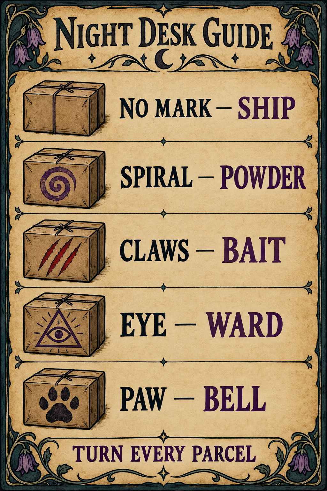

Inspect the strange. Protect the small.

Rotate every parcel. Tiny stamps can hide on narrow edges and underneath. Tests are unlimited, but each costs 6 seconds. A safe parcel has no supernatural mark.
◎ Spiral · CurseMatch the parcel’s color splat. Hold a colored powder with mouse click or VR grip, move over the parcel, and release to pour.
/// Claws · MonsterOffer bait. Close three latches in the center zone.
△ Eye · DemonUse the ward. Reverse seals III → II → I.
♣ Paw · SigilRing the bell. Hum → food → open. Recover one sigil fragment!
Desktop: drag the scene or use arrow keys to rotate; hover over counter tools to read their descriptions, then click to activate; use the stamp to approve and ship. Space pauses. R returns the parcel to the desk.
Quest: touch a tool with a tracked controller, or point and press either trigger to activate it. Point at a parcel and hold grip to pick it up, then turn your wrist. Release grip to return it safely. Use the front “Recenter” lever in VR to place the counter in front of you at a comfortable height.
Customers deliver batches of 1–3 parcels through the front door. Finish the batch to receive another visitor. Paw-marked parcels follow a 2 / 2 / 1 opportunity rhythm across full shifts. Five fragments awaken Mawhound; every five more restore his sigil and grant a level. Failed rescues or early closing delay progress. Five-minute shifts; close early whenever you like. After closing, touch the back-room bottle to enter the sanctuary. Use its wooden noticeboard for companion care. Your companions cannot be permanently harmed. Leaving mid-shift restarts that shift; saves happen only between shifts.
First playable · 7 parcel shapes · 4 treatments · randomized shifts. The full story campaign is not included.